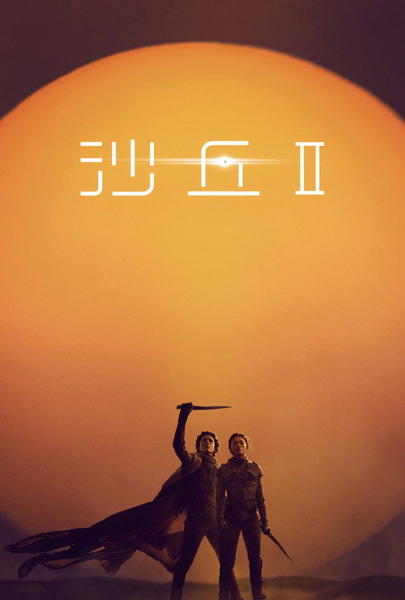
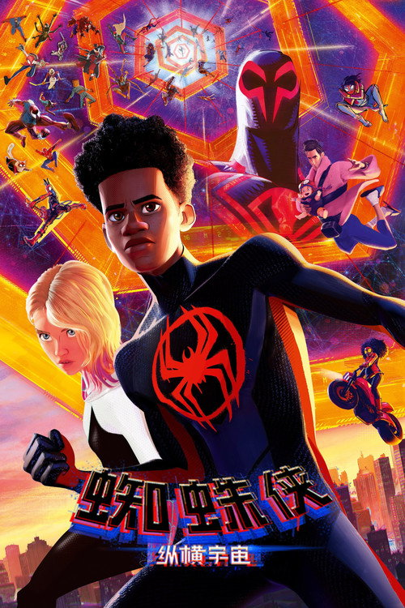
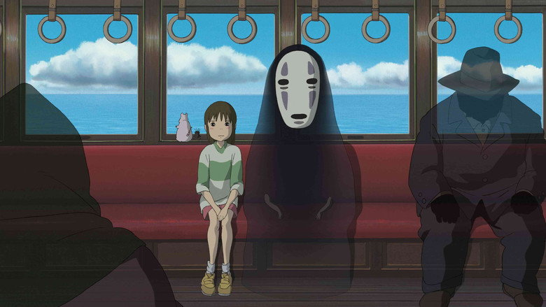

Theme Lab / 2026.11
同一套录入界面，
五种温度。
切换左侧配色与圆角，右侧的队列、卡片、表单和按钮即时变化。表格与图像始终保持直角。
管理端 / 录入工作台
观看端 ↗本地 · 已连接
Ingest
录入工作台
12待核对
05缺少资料
03发布阻断
02探测失败
01已确认
| 作品 / 文件 | 状态 | 整理目标 | 资料 | 操作 |
|---|---|---|---|---|
| ✓  沙丘 2Dune.Part.Two.2024.2160p.mkv |
待核对 | 电影 / 科幻 | 4 / 6 | |
| 千与千寻Spirited.Away.2001.1080p.mkv | 已抓取 | 电影 / 动画 | 6 / 6 | |
 蜘蛛侠：纵横宇宙Spider-Man.Across.the.Spider-Verse.2023.mkv |
缺少资料 | — | 2 / 6 | |
| 疯狂的麦克斯：狂暴之路Mad.Max.Fury.Road.2015.2160p.mkv | 发布阻断 | 电影 / 科幻 | 5 / 6 |
已选 2 项
标签
10收藏夹
03

操作面板
DrawerArchive · 克制圆角表格 / 图像始终 0 圆角